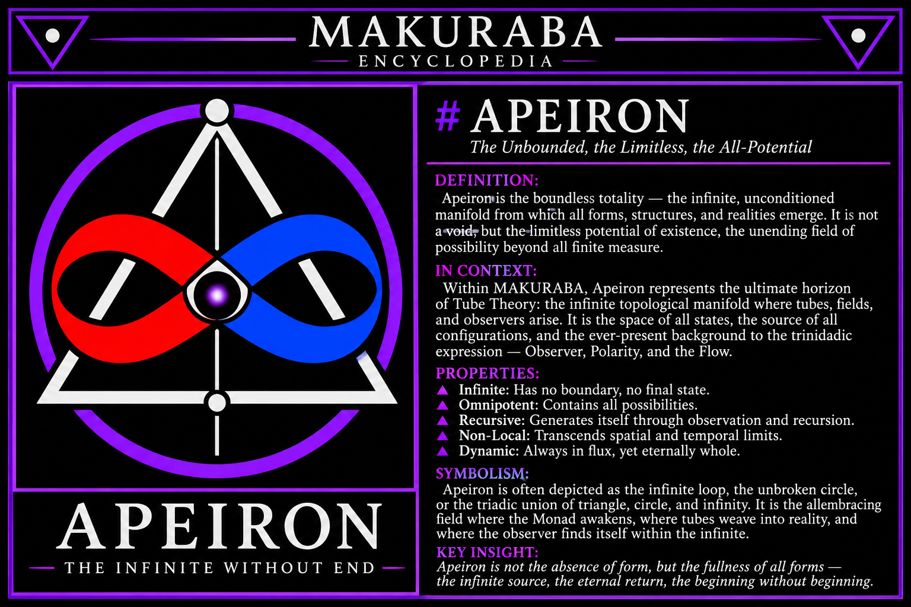

Aperion

APEIRON
Classification: Primordial Principle / Boundless Origin Greek: Ἄπειρον Literal meaning: The Boundless, the Unlimited, the Indefinite Historical association: Anaximander of Miletus
- Definition
The Apeiron is the primordial, indefinite ground from which differentiated existence emerges. It is not confined to a particular shape, substance, polarity, dimension, or identifiable boundary.
In Anaximander's philosophy, the Apeiron is the originating principle from which opposing qualities and the ordered world arise.
- Philosophical significance
The Apeiron represents existence prior to established differentiation. It is the conceptual ground before distinctions such as hot and cold, light and dark, or positive and negative become manifest.
It is therefore understood not as an ordinary object within the universe, but as a principle underlying the emergence of the universe's particular forms.
- MAKURABA interpretation
Within MAKURABA, the Apeiron may provisionally be interpreted as the unbounded configuration space of potential existence.
It represents the conceptual condition prior to the establishment of a particular geometric configuration, polarity, or observational boundary.
The Apeiron is not necessarily nothingness. Rather, it represents the absence of a fixed limitation upon what may become differentiated.
Its relationship to the MAKURABA framework can be explored through:
- Monad: The conceptual point of initial reference or differentiation.
- Manifold: The space of possible configurations and transformations.
- Polarity: The emergence of distinguishable opposing conditions.
- Tube: A possible intermediary geometric expression connecting differentiated states.
- Observation: The establishment of a distinguishable configuration or relational boundary.
- Foundational axiom
The boundless precedes the bounded; differentiation gives the indefinite a distinguishable expression.
- Conceptual distinction
The historical Apeiron of Anaximander and the MAKURABA interpretation are not identical propositions. The former is an ancient philosophical cosmological principle; the latter is a proposed framework for exploring configuration, geometry, differentiation, and observation.
Encyclopedia status: Foundational philosophical reference; mathematical interpretation pending formalization.
APEIRON
Part II — Ontological and Geometric Implications
- The Apeiron and the Problem of Boundaries
The Apeiron introduces a fundamental question: how does something bounded emerge from that which is unbounded?
A boundary establishes distinction. It separates one configuration from another, allowing identity, polarity, dimension, and measurable relationships to become possible.
The Apeiron, by contrast, represents the conceptual condition prior to any particular boundary being established.
Within MAKURABA, this distinction provides a starting point for investigating how finite structures may emerge from an indefinite field of potential configurations.
- Relationship to Zero
Zero is an important mathematical analogy for approaching the Apeiron, although the two concepts are not equivalent.
Zero represents a defined numerical value within a mathematical system. The Apeiron represents philosophical boundlessness.
MAKURABA explores a further possibility: zero as an initial reference from which spatial and geometric relationships can be constructed.
Through measurement, deviation, transformation, and the establishment of boundaries, an initial reference can participate in the construction of increasingly differentiated configurations.
Thus, zero is not necessarily the Apeiron itself, but may serve as a mathematical instrument for investigating its conceptual implications.
- Relationship to the Monad
The Monad represents unity, singularity, or an initial point of reference.
Where the Apeiron represents the indefinite, the Monad represents the conceptual emergence of a distinguishable unity.
This establishes a useful conceptual progression:
- Apeiron — indefinite potential.
- Monad — initial differentiation.
- Polarity — relational distinction.
- Geometry — structured configuration.
- Manifold — space of possible configurations.
This sequence is a proposed MAKURABA interpretation, rather than an established physical sequence.
- Relationship to the Manifold
A manifold provides a mathematical language for describing spaces that may possess complex global structures while appearing locally organized.
Within MAKURABA, the manifold is considered a possible formal representation of the relationships and configurations emerging from an initially indefinite condition.
The Apeiron is not itself a mathematically defined manifold. Rather, the manifold offers a means of exploring how configurations, boundaries, transformations, and dimensional relationships might be represented.
This distinction is essential: the philosophical concept establishes the question, while mathematics supplies tools for investigating it.
- Relationship to Tube Theory
Tube Theory introduces the tube as a proposed intermediary geometric expression connecting differentiated states.
Within this interpretation, the Apeiron provides the philosophical backdrop against which geometric differentiation is considered.
The tube becomes relevant when examining:
- Continuity between configurations.
- Dual polarity and relational structure.
- Directional flow and transformation.
- Fiber organization and bundling.
- Re-entry and recurring configurations.
The tube is therefore not assumed to be the Apeiron itself. It is a proposed structural expression within the larger MAKURABA investigation.
- Trinidadic Emergence
The Apeiron also provides a conceptual starting point for investigating trinidadic expression.
A trinidadic relationship consists of:
- One interconnecting point.
- One polarity point.
- A second polarity point.
Together, these establish a relational structure in which distinction and connection coexist.
Within MAKURABA, this arrangement is investigated as a possible foundation for increasingly complex organization, including the emergence of structured relationships between fibers and configurations.
Whether this structure is universally necessary for sentience or physical organization remains an open hypothesis.
- Formalization
To advance the Apeiron from philosophical principle toward mathematical investigation, MAKURABA proposes several questions:
- Can an indefinite configuration space be formally defined?
- What mathematical conditions establish a boundary?
- Can transformations generate new configurations without violating system constraints?
- How can polarity and recurrence be represented?
- Can a maximal configuration space be established relative to a defined set of admissible transformations?
These questions provide a bridge between the philosophical concept of boundlessness and the computational development of MAKURABA.
- Extended Axiom
The Apeiron is the indefinite; differentiation establishes the bounded, and transformation permits the bounded to participate in an ever-expanding field of possibility.
- Encyclopedia Conclusion
The Apeiron occupies a foundational position in MAKURABA's philosophical vocabulary.
It represents the question of origin before the establishment of particular form, the possibility of distinction before a particular boundary, and the conceptual relationship between the indefinite and the finite.
It is not a substitute for a mathematical theory of infinity, nor does its philosophical existence establish a physical mechanism.
Rather, it provides the originating philosophical principle from which MAKURABA begins its investigation of unity, differentiation, geometry, polarity, and recursive configuration.
Status: Foundational philosophical principle. Mathematical and physical interpretations remain under development.